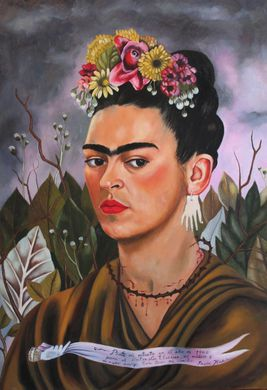
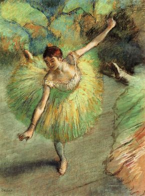
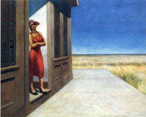

After 10 years experiences in Pharmaceutical Companies as Product Manager, I am looking now for new skills and experiences in web design. Doing Le wagon is for me the best way to understand web architecture and design and to enter the French Tech Family. After le wagon my objective is to work in startups developing web services in health management or companies who wants to digitalize their services.
|  |
Frida KahloMagdalena Carmen Frida Kahlo Calderón (July 6, 1907 - July 13, 1954), was a mexican painter. Known in the world for the suffering reflected in her works, which are based on her life and what she had to go through. |
|  |
Edgar DegasEdgar Degas (July 19, 1834 – September 27, 1917), was a French artist famous for his work in painting, sculpture, printmaking and drawing. |
 |
Edward HopperEdward Hopper (July 22, 1882 – May 15, 1967), was an American realist painter and printmaker. Both in his urban and rural scenes, his spare and finely calculated renderings reflected his personal vision of modern American life. |